NURBS beam candidates
Reviewed design mockups. These show proposed appearance and state communication, not screenshots of implemented Xuzz features.
Read the candidate report · Read the adversarial review
Run the native full-KJV prototype and continuous page-break example


C1 · satin
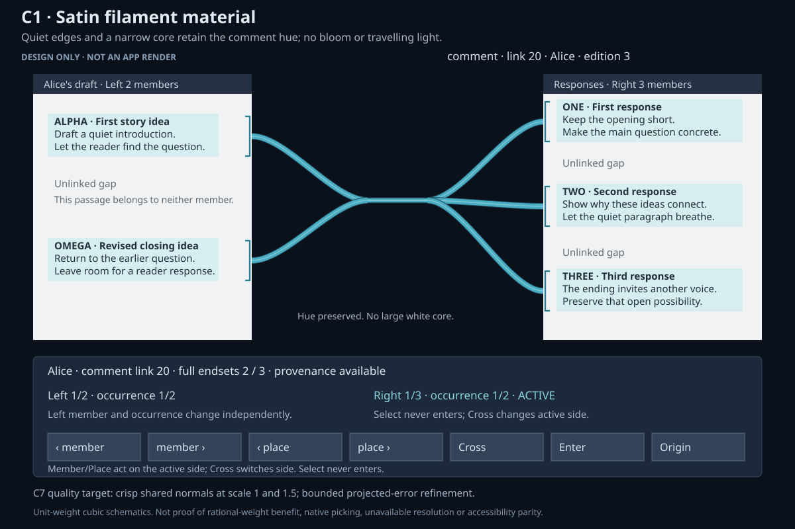
C1 isolates a quiet stationary material. Type hue stays stable; transclusion and drag feedback retain distinct treatments.


C2 · shoulders
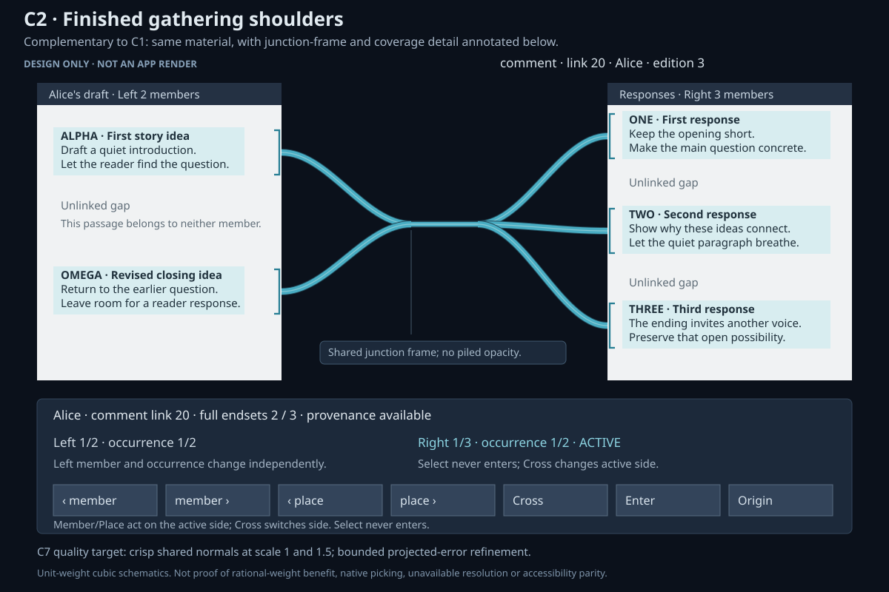
C2 isolates the junction envelope and coverage. Current ordinary routes already have aligned horizontal endpoint tangents.


C3 · exact ranges
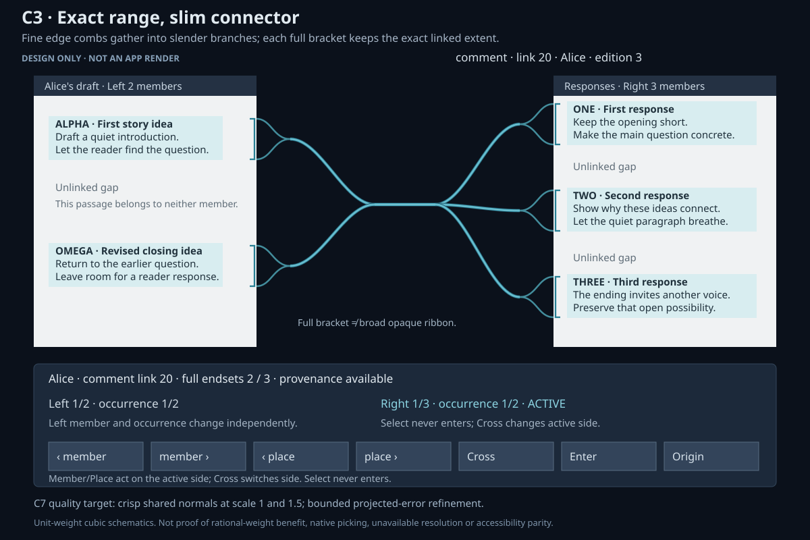
C3 separates the exact passage extent from connector thickness. Gaps stay unmarked; the trunk does not encode member count.


C5 · cursors
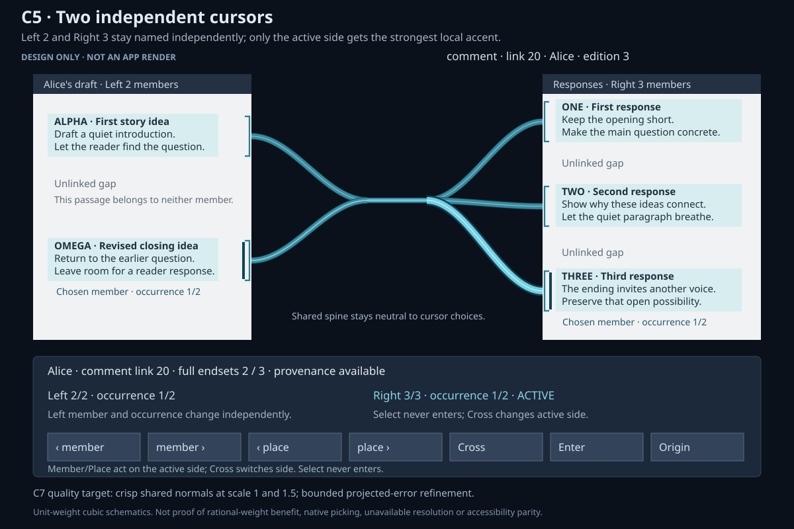
C5 names member, occurrence and active side separately. Local accents do not create an authored pair or enter content.


C6 · unresolved
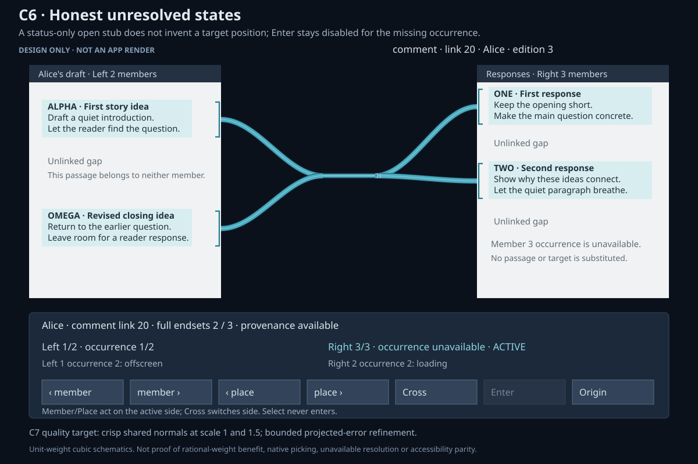
C6 keeps complete counts and explicit resolver statuses. Unavailable targets have no invented destination or trajectory.


C7 · quality target
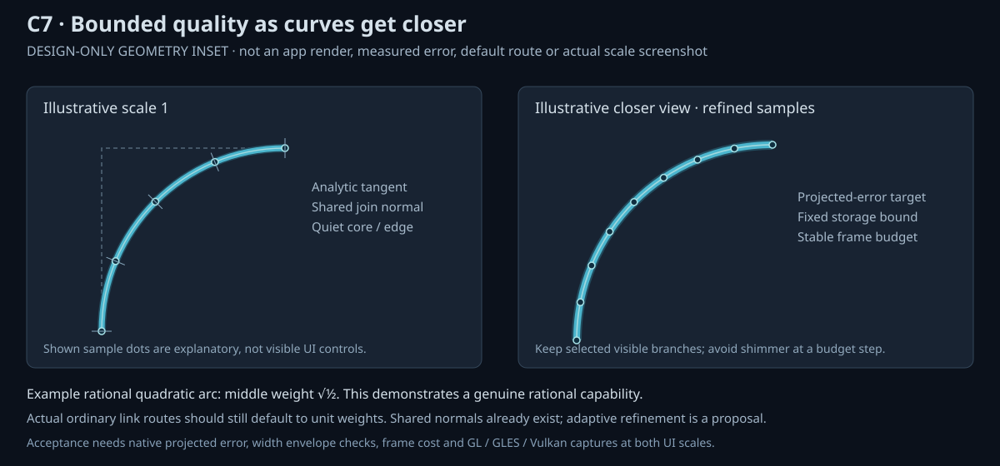
C7 illustrates bounded projected quality. Sample dots are explanatory, not controls or measured performance results.


Stress · ten crossings
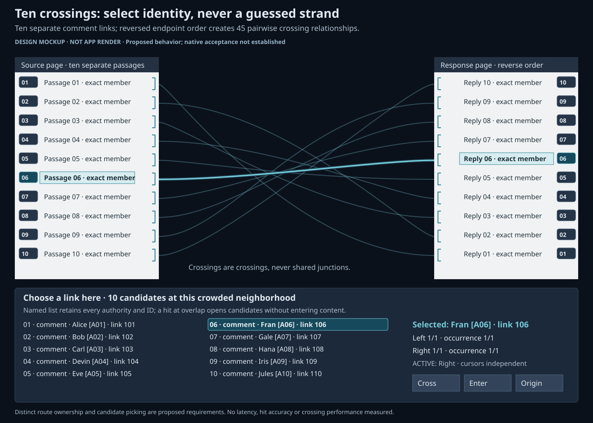
Ten intersecting independent links retain separate identities; named selection avoids a topmost-route guess. Design mockup; pictured controls are not interactive.


Stress · distant pages
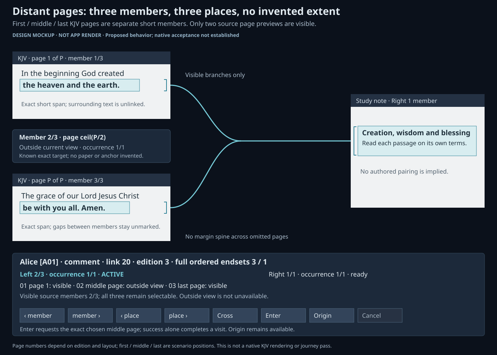
Three distant members remain separate with exact local markers and an offscreen row; no spine marks the gaps. Design mockup; pictured controls are not interactive.


Stress · overlaps
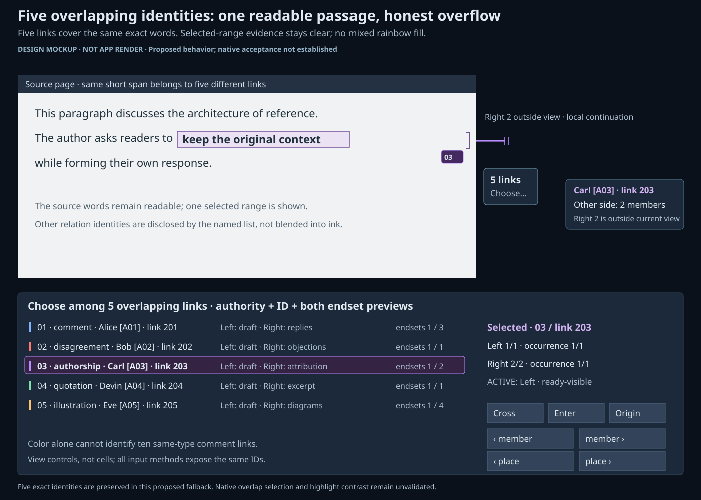
A selected exact passage stays readable while a named count exposes all overlapping identities. Design mockup; pictured controls are not interactive.


Stress · wide anchor
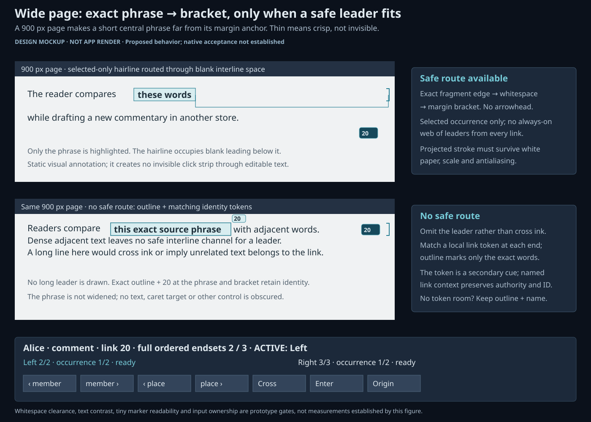
A thin selected-occurrence leader routes through blank space; unsafe routes use matching tokens and exact outlines. Design mockup; pictured controls are not interactive.


C4 · deferred corridors
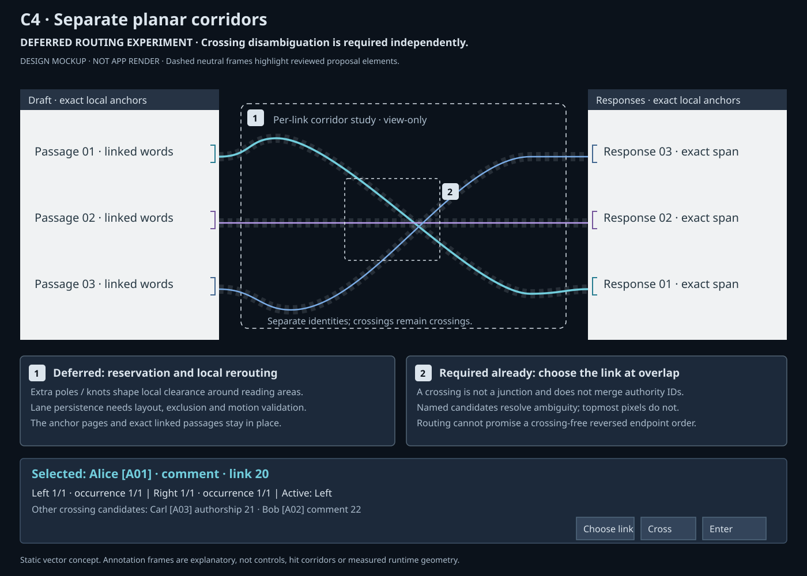
Deferred per-link corridor routing is highlighted with neutral dashed reservations; named crossing disambiguation remains required. Numbered neutral frames are review annotations. Design mockup; pictured controls are not interactive.


C8 · deferred ladder
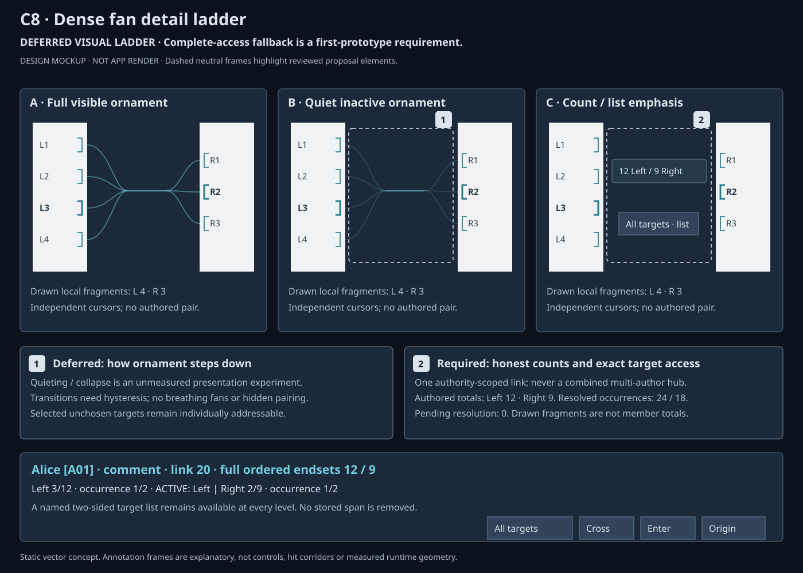
Deferred visual quieting and count emphasis are highlighted; exact markers and complete named target access remain required. Numbered neutral frames are review annotations. Design mockup; pictured controls are not interactive.


C9 · rejected default
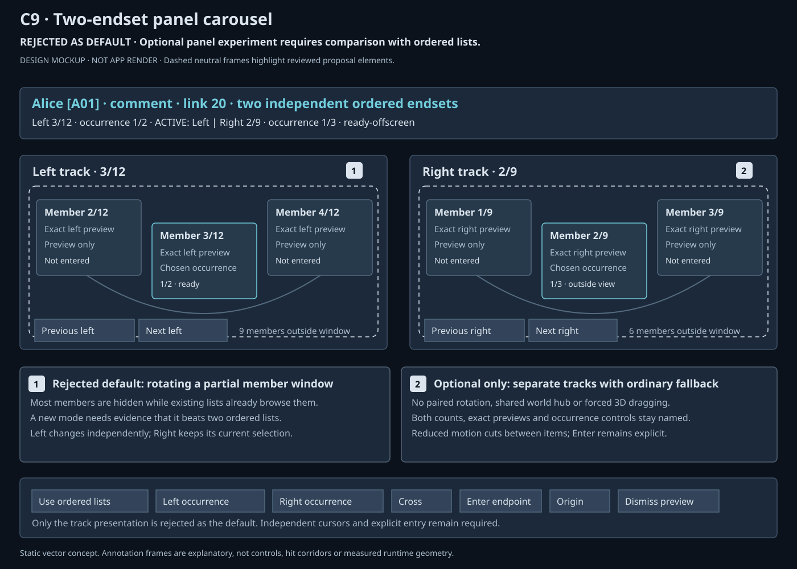
The two independent carousel tracks are highlighted as rejected default presentation; ordered-list fallback remains visible. Numbered neutral frames are review annotations. Design mockup; pictured controls are not interactive.


Combined · ready
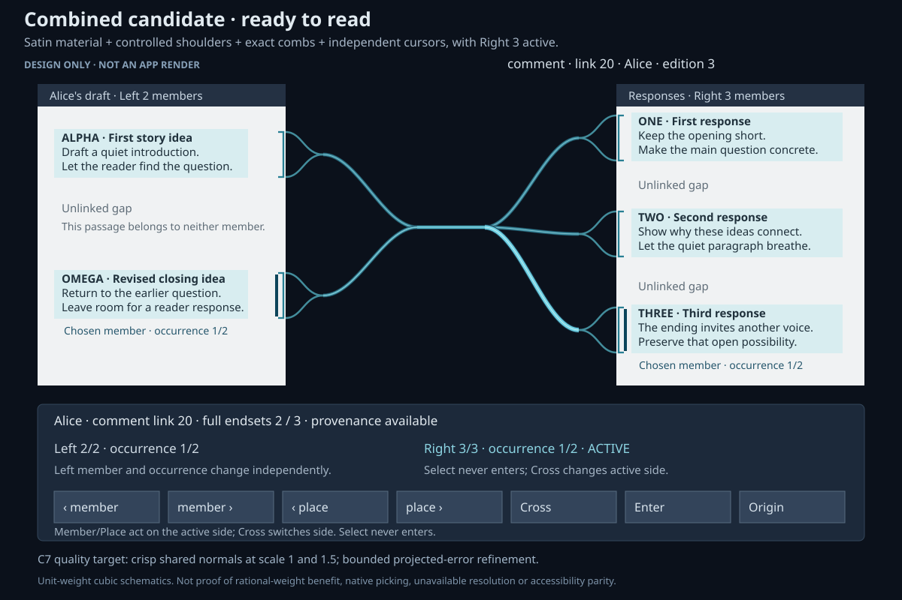
Combined ready state. One link, two full independent endsets, exact brackets and a neutral common trunk.


C1 and C2 isolate complementary aspects of the same treatment. C7 is an illustrative quality target; projected sampling and error have not been measured here. Ordinary route mockups use static unit-weight cubic paths; C7 includes a separate rational quadratic arc example.